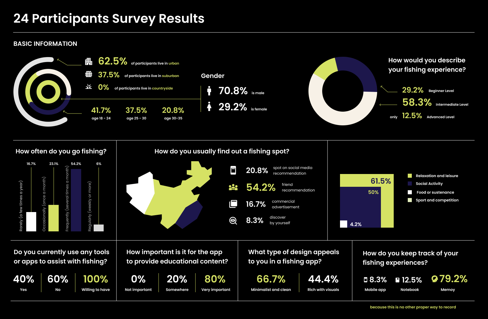

Multi-sensor Physicalization
Community
Play
While FishOn already digitalizes the market for younger users,it still lacks a natural flow to guide them before, during, and after their trips. Young anglers often face fragmented knowledge and steep learning curves, especially when fishing within limited time.
Our goal is to make the experience more organized, reduce disappointment from empty catches, and ensure fishing remains fun and efficient.
HMW create a natural, seamless flow that guides users before, during, and after fishing trips?
Map of Community of Practice
Software - Platforms & Services
+
LakeMonster
An app that analyzes data points — including satellite imagery, weather patterns, water depth data, and historical fishing records to generate fish activity forecasts, hotspot maps, and water clarity maps.
Fishbuddy
Smart decisions: uses 10+ weather factors (temp, pressure, humidity) to flag prime times, recommend bait, and navigate nearby spots. Social: in-app forum to share catches and techniques.
墨迹天气
Expert-verified with hi-res satellite and depth maps. AR+AI logging: snap a fish to auto-record species, size/weight, location, and weather. AR contests: create/join casual challenges with live leaderboards.
Hardware - Devices & Interfaces
+
Sea.ai
Smart camera: combines optical and infrared sensors, utilizes AI and ML algorithms to detect objects on the water surface.
Chasing F1 Pro
Remote/autonomous lateral movement, station-hold, multi-spot waypoints. Depth & temperature sensors; Wi-Fi streams live video + depth/temp to the app. Bait-boat mount with one-tap in-app bait release.
Forking Path
Map of Community of Practice
+
Research Methods
- Market research – analyzing fishing industry trends, competitors, and emerging technologies in global market
- Questionnaires/Surveys – collecting quantitative insights on user behaviors, needs, and expectations.

- Interviews – focusing on 3 types of users (e.g., novice anglers and experienced anglers) to gather qualitative perspectives.
- Feedback on current app – capturing structured feedback from team members and early adopters.
- AI tools/model research – how agent AI are used today and how to fine-tune a fishing model
Proposed Workflow
Information Architecture
+
Pre-Fishing - Preparation & Planning
+
Inputs
User profile (experience level, preferences), Time availability, Location access, Weather data, Regulations
Agent Actions
Collect user goals ("I want to fish this weekend for 3 hours."), Analyze external data (weather, water level, seasonality), Recommend optimal time & location for fishing, Suggest equipment & bait (with purchase/rental links), Provide a step-by-step preparation checklist
During Fishing - Real-Time Guidance & Support
+
Inputs
GPS location, Live conditions (weather/water APIs), Manual user updates
Agent Actions
Provide real-time tips (e.g., adjust bait, change spot), Offer safety alerts for sudden weather/water risks, Enable quick-reference tutorials (casting, knot tying), Track catches & efforts automatically (photo or manual logging), Offer motivational nudges if no fish caught after a while
Post-Fishing - Reflection & Engagement
+
Inputs
Catch log, Effort data, Social sharing intent
Agent Actions
Summarize trip results (e.g., effort vs. outcome), Suggest improvements for next time (learning loop), Provide AI-generated trip journal (story + photos), Enable social sharing (successes & learnings), Offer gamification: badges, streaks, community challenges
Computational Challenges
Harware Information Extraction and API Integration
+